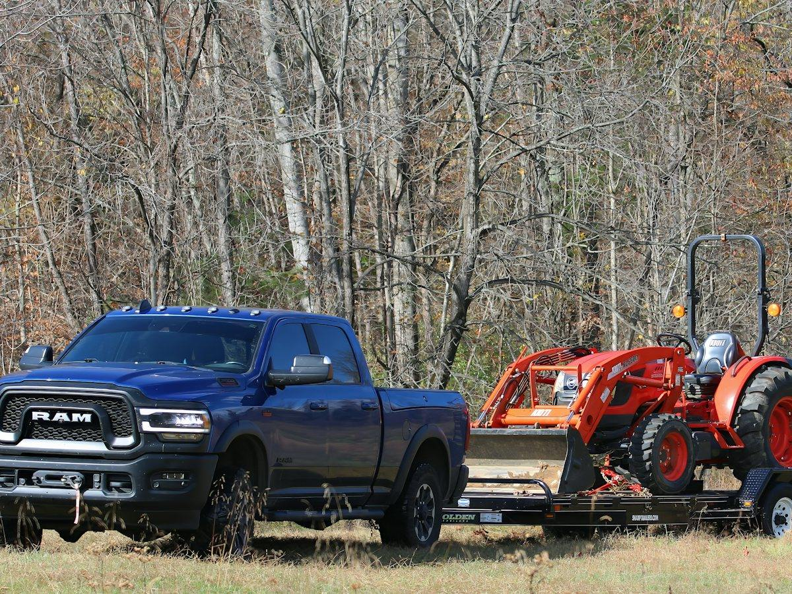

DOT (USDOT Number)
USDOT para empresas de construção
Sua empresa usa caminhonete com trailer ou caminhão para levar material e equipamento? Na Geórgia, isso pode exigir USDOT. Cuidamos de tudo para você trabalhar sem multa e sem veículo parado.
Falar no WhatsApp
O que fazemos
- Avaliação: se a sua empresa precisa ou não de USDOT
- Registro do USDOT Number na FMCSA
- Renovação obrigatória a cada 2 anos (Biennial Update / MCS-150)
- UCR: registro anual para quem cruza a divisa do estado
- Organização dos arquivos dos motoristas (Driver Qualification File e cartão médico)
- Preparação e acompanhamento de auditorias do DOT
Prazos e regras importantes
O que a lei exige
Quem precisa de USDOT
Veículo comercial (ou caminhonete + trailer) com peso bruto de 10.001 lbs ou mais que cruza a divisa do estado precisa de USDOT. A Geórgia também exige USDOT para quem roda só dentro do estado, acima de 10.000 lbs.
Renovação a cada 2 anos
O MCS-150 deve ser atualizado a cada 2 anos, mesmo que nada tenha mudado. O último dígito do seu USDOT define o mês (1 = janeiro … 0 = outubro) e o penúltimo define se é em ano par ou ímpar. Quem não atualiza tem o número desativado e pode levar multa de até $1.000 por dia (máximo $10.000).
UCR anual
Empresas que transportam o próprio material e equipamento para outros estados também precisam fazer o UCR todo ano (abre em 1º de outubro).
Auditoria de empresa nova
Empresas novas que rodam entre estados passam por uma auditoria de segurança da FMCSA nos primeiros 12 meses. Arquivos de motoristas, manutenção e seguro precisam estar em ordem.
Como funciona
Simples, em 3 passos
Avaliação
Vemos o peso dos veículos (com trailer) e onde eles rodam.
Registro ou renovação
Cuidamos de todo o processo na FMCSA.
Em dia sempre
Avisamos das renovações e preparamos você para auditorias.
Dúvidas frequentes
Perguntas sobre DOT (USDOT Number)
Minha caminhonete precisa de DOT?
Depende do peso somado da caminhonete com o trailer (GVWR/GCWR). Se passar de 10.000 lbs, na Geórgia normalmente precisa. Avaliamos com os dados do seu veículo.
Preciso de MC Number?
Normalmente não. O MC é para quem transporta carga de terceiros por pagamento. Quem leva o próprio material e equipamento costuma precisar só do USDOT.
Preciso de CDL?
A CDL (carteira comercial) só é exigida a partir de 26.001 lbs ou em casos específicos. Abaixo disso, o motorista precisa de driver license normal e, entre estados, do cartão médico do DOT.
Meu USDOT foi desativado. E agora?
Dá para reativar fazendo a atualização do MCS-150. Não rode com o número desativado. Fale com a gente.
Fontes oficiais: FMCSA: Preciso de USDOT? · FMCSA: Biennial Update (MCS-150) · UCR: Unified Carrier Registration
As informações desta página são gerais e podem mudar. Confirmamos as regras do seu caso no atendimento.
Vamos resolver isso juntos?
Atendimento em português · 1695 Lower Roswell Rd, Suite 100 · Marietta, GA
Outros serviços